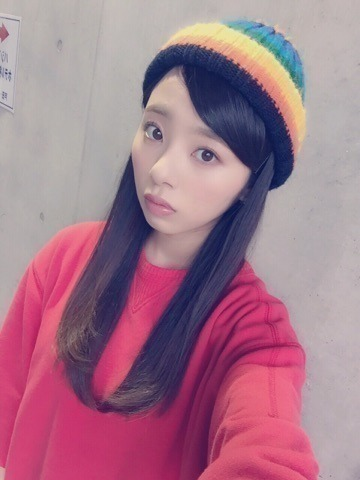
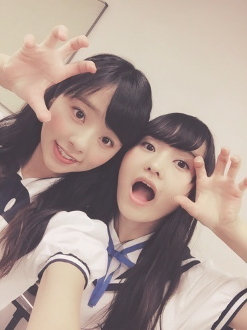
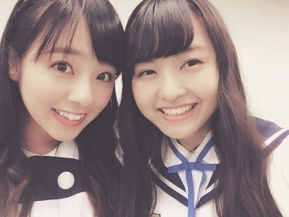
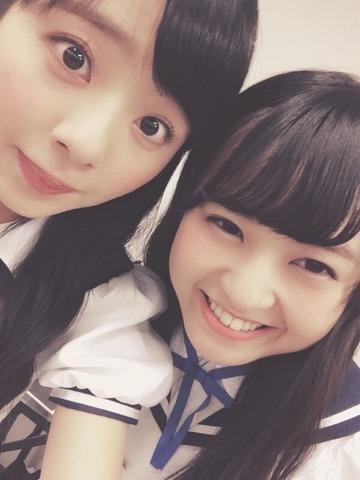

おつかれたまです♡
かわむら まひろです.＊ノ

このニット帽可愛いでしょU・x・U？
子供の頃によく被っていた思い入れのある帽子なんです．ノ
気に入ってたし，そう簡単に捨てることができません．
なので日曜の握手会でかぶっちゃいました(#^.^#)ノ笑
子供の頃に,
青のオーバーオールに
赤のTシャツに
ロングヘアーのパーマで高めツインしてたのを思い出します。
という事で，20歳となった私は，その頃の面影を残したコーディネートで握手会に挑みました♡ノ
スキニーデニムに赤のトレーナー
やっぱシンプルで可愛いファッションが好きやなぁぁん♩
セブンライブ，ミニライブ，全国握手会，個別握手会にお越し下さった皆さま，本当にありがとうございます！
また沢山の方から色々と吸いとってチャージしちゃいました♡ぇへ
全握では同学年のまりかとペアでした♩
だからなのか，同い歳の子が沢山きてくれました...♡
がぉ.

にぃ.♡

あっぷ.♡

まりっ会の皆様，Rotty夢の皆様，初めましての皆様，皆皆,,, ありがとぉぉぉ♡！！！
楽しかったです。
また会いにきてくださいね(#^.^#)♡？
そして,驚いた事が、、、
想像以上に「ヤングギター」連載の事，祝福されました...♡
街を歩いていると,いつもは「乃木坂46の～ですよねぇ？」って声をかけられるのに,
「ヤングギターの～ですよねぇ？ ギタヒロ頑張って下さい！」といきなり声をかけられて,私も驚きました(#^.^#)ノ
いきなり,ギタヒロって略し方覚えてくれとるぅぅぅー！って思い本当に嬉しかったです♡
がんばります！
ではでは,また更新しますねん。
ばいばい。ノ